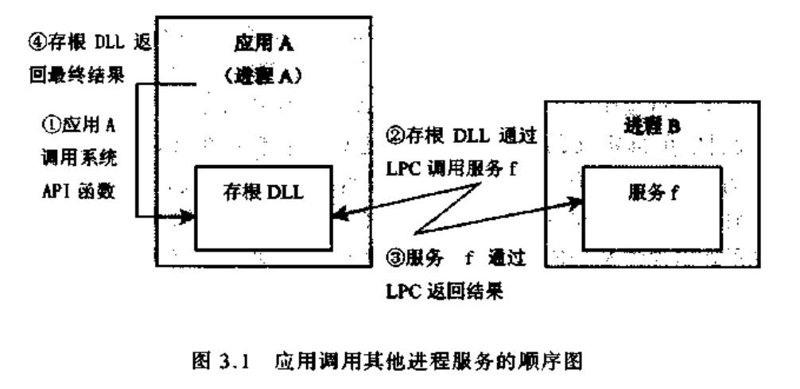
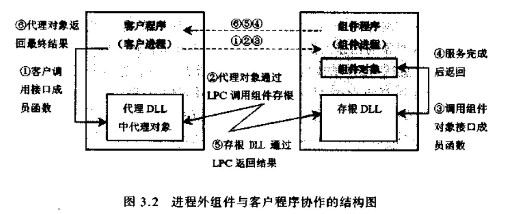

上篇已经梳理了com的由来，总结如下：
COM的思想其实是从OO开始，一点点增加出来的。
（1）既然所有的程序说到底都是一段段二进制执行码，那么COM的标准直接针对二进制码也就理所当然了。这样带来的好处显而易见，就是语言的无关性。
（2）OO中的类和对象思想已经提供了一种高内聚低耦合的实现，因此COM也顺理成章的借鉴了这一切。COM中重用的单位是COM对象，其二进制代码需要满足一定的标准。而这个标准来自于Windows平台下，经VC（GCC一样，其实）编译的，用C++写出来的类在实例化成对象后得到的二进制代码。所以为什么COM对象的开头都是一列指针，每个指针指向一列函数呢？因为C++就是这样实现虚函数和多重继承的。
（3）从COM对象逆推回去，就有了COM类的概念。因为开发者不一定用OO语言来实现COM对象，所以COM类不一定能和OO中的类扯上关系，它们的类似之处只在于抽象提取了COM对象的功能。当然，如果用C++来开发，则C++中的类和对象就都可以平移推到COM上了。
（4）C++中一个类可以有多个实例对象，COM也一样。C++通过名字来标识类，利用操作符new和构造函数来获取内存空间和初始化内存内容，得到实例化的对象。COM类用一个全局唯一的ID（GUID）来标识，称为CLSID，COM利用类厂（ClassFactory）来得到实例化的COM对象。
（5）系统用公共空间保存所有可被重用的COM类的CLSID和其具体位置的对应（在Windows下是保存在注册表中），这样所有的用户只要知道CLSID，都能顺利找到COM类。然后COM类可以利用类厂生成COM对象。COM类和类厂的实现代码可以在DLL中，也可以在EXE中，可以在本地，也可以在网络的另一端。
（6）不管如何，使用COM对象的最终目的还是为了用里面的函数。COM对象要实现多个接口（Interface），每个接口都包含一组函数，也用一个GUID来标识，称为IID。接口的二进制代码很简单，就是一个函数指针数组，因此只要知道接口指针就能顺利调用接口的每一个函数。COM统一了一个标准的接口，每个COM类都必须有的。其中一个函数QueryInterface()就可以根据IID来得到接口指针。
1. 什么是COM
COM–Component Object Model，即组件对象模型，它是微软提出的一套开发软件的方法与规范。它也代表了一种软件开发思想，那就是面向组件编程的思想。
COM组件在物理上是一些DLL或EXE文件；
COM组件实现二进制级别的代码重用；
COM是与程序设计语言无关，理论上任何语言都可以开发和调用COM组件；
COM组件用引用计数实现生命周期的自我管理；
COM组件调用者能够查询它所支持的接口；
COM组件的位置对调用者是透明的；
COM组件依赖于注册表；
COM组件都要直接或间接的实现IUnknown接口……
com对象与C++对象的比较
封装性
com对象的数据是完全封装在对象内部的，外部不可能直接访问对象的数据属性，因为com对象和客户程序可能在不同的模块中甚至在不同的进程中或不同机器上，com对象的数据成员的封装以组件模块为最终边界，对于对象用户是完全透明的、不可见的；
c++对象的封装性只是语义上的封装，通过对类的成员访问进行控制，使用者有可能直接访问对象中的数据成员，
可重用性
可重用性事面向对象的重要特性，com对象的可重用性表现在com对象的包容和聚合，一个对象可以完全使用另一个对象的所有功能；而c++对象的可重用性表现在C++类的继承性，派生类可以调用其父类的非私有成员函数。
com对象A如果要使用另一个com对象B的功能，则可以通过包容和聚合来实现，而且当对象B更新了版本或者增强了功能时，对象A自动使用新版本的对象B，而根本不需要重新编译或者重新设置，因此com对象的重用是动态的；
c++对象的重用性表现在源代码一级的重用性上，当类A的实现做了修改时，则类B必须重新编译或者需要修改相应的代码，才能适应新的类A。
com对象的标识–CLSID
com组件的位置对客户来说是透明的，因为客户并不直接去访问com组件，客户程序通过一个全局标识符进行对象的创建和初始化工作，com规范采用128位全局唯一标识符GUID来标识组件对象，这是个随机数，并不需要专门机构进行分配和管理，手工构造128位guid或者编写程序来产生guid是件很麻烦的事，为此Microsoft VisualC++提供了两个工具实现这样的目的：UUIDGen.exe和GUIDGen.exe，前者是一个命令行程序，后者是一个基于对话框的应用程序。
com库为我们提供了以下API函数可以产生GUID:
HRESULT CoCreateGuid(GUID *pguid);
CLSID是用来标识com对象的GUID，因此CLSID在结构定义上与GUID一致
2. IUnknown接口
所有COM组件都直接或间接实现IUnknown接口，IUnknown接口是COM的根接口，其声明为：
1 | interface IUnknown |
标准C++中没有interface关键字，这里的interface是typedef struct interface。
1 | STDMETHODCALLTYPE等价于__stdcall |
COM规定，调用函数的方式必须为__stdcall，这是pascal语言缺省的调用函数的方式：函数的参数从右到左依次压栈，函数退出时自己清空占用的堆栈，大多数的系统API也都使用这种调用习惯；
与之相对的为__cdecl，这是C/C++语言缺省的调用函数的方式：函数的参数从右到左依次压栈，函数退出时，由调用者清空函数占用的堆栈，主要是可以实现可变参数的特性（例如printf函数）
QueryInterface函数，客户通过该函数查询COM实现的接口；riid是接口的标识，为GUID形式；返回值标识查询的接口是否实现，如果实现了，则返回S_OK，并且ppv指向接口的实例，否则返回E_NOINTERFACE，ppv指向的内容无效。QueryInterface函数隔离了不同编程语言构造对象实例的差异。
AddRef和Release函数实现了COM对象生命周期的自我管理。实现该接口的类需要有一个ULONG型成员记录其实例的引用计数，如果AddRef一次，引用计数加1，否则引用计数减1，如果引用计数为0时，就释放该实例。这两个函数隔离了不同变成语言释放对象实例的差异。
3. 实现一个最最简单的COM组件
1 | //BeginningCOM.h |
BeginningCOM.h中，先定义一个GUID作为实现接口的class的ID。BeginningCOM.cpp中实现IUnknown接口。
DllGetClassObject是客户调用COM组件的入口，需要导出这个函数：
1 | //BeginningCOM.def |
4. 注册COM组件
在HKEY_CLASSES_ROOT\CLSID键下注册COM组件的class信息。创建一个reg文件，导入注册表即可。
1 | //regsvr.reg |
@=”BeginningCOM”是class的描述信息，可忽略。
“ThreadingModel”=”Both”是COM组件的套件类型，后面介绍。
相应的卸载COM组件的reg文件内容应该为：
1 | //unregsvr.reg |
需要注意的是，在Win64中，如果COM组件编译选择的是X86，那么注册表会进行重定向，读取位置变为HKEY_CLASSES_ROOT\Wow6432Node\CLSID，因此，注册时，键值应该写在这个路径下。
5. 调用COM组件
要调用COM组件，必须向客户公布接口ID，class ID等，我们这里把需要公布的信息放到BeginningCOM.h中。
下面的代码用于调用刚创建的COM组件。
1 | #include <Windows.h> |
在使用COM组件前，需要初始化COM调用环境，CoInitialize初始化单线程套间，只有一个保留的参数，CoInitializeEx除了一个保留的参数，还可以指定初始化的套件类型。
进程内组件和进程外组件
com的实现与操作系统平台密切相关，因为com最初源于Microsoft Windows平台，所以com的实现部分很多地方直接用到了windows系统的一些特性，比如系统注册表、动态链接库等，但实际上，com是一个与平台无关的组件软件模型
不管COM对象有多少花哨的东西，其本质只是一段内存，有数据有代码而已。因此当一个COM对象被使用的时候，是谁，并且怎样把这些数据和代码载入内存呢？
首先，最简单的就是调用者和COM对象在一起，这时候函数调用就是普通的调用，没有任何使用上的障碍。然而这样一来显然无法把COM对象独立出来，自然无法做到重用。因此COM对象首先应该孤立于任何调用者，单独被保存在系统中。这时候作为可执行程序，它可以是DLL，也可以是EXE。
COM对象作为DLL被使用时，调用者会先用LoadLibrary()把DLL整个装入自己的进程空间，然后获取里面类厂的地址，再通过调用类厂的接口函数来生成COM对象。此时COM对象是在用户进程空间内生成的，对用户而言能够更加方便快速的使用COM对象提供的功能。
另外一种方式是COM对象作为EXE被使用。此时调用者会先给当前进程创立一个子进程来运行该EXE，然后通过进程之间的通信来依次调用类厂的接口函数，COM对象的接口函数，等等。
这两者区别仅仅在于调用者和COM对象是否存在于同一个进程空间而已。
进程内组件
进程内组件和客户程序运行在同一个进程地址空间中，所以一旦客户程序与组件程序建立起通信关系之后，客户程序得到的接口指针直接指向组件程序中接口的虚表，客户代码可以直接调用这些成员函数，所以其效率非常高
进程外组件
我们也可以让组件程序独占一个进程，而不使用客户程序的进程空间，因为它运行在客户进程的外面，所以我们把这种组件程序称为进程外组件程序，有时也称为进程外服务程序
因为进程外组件程序和客户程序位于不同的进程空间之中，它们使用不同的地址空间，所以组件和客户之间的通信必须跨越进程边界，这就涉及到以下一些问题：
1、一个进程如何调用另一个进程中的函数
2、参数如何从一个进程被传递到另一个进程中
Windows平台上，在不同进程之间进行通信的办法很多，包括动态数据交换（DDE）, 命名管道（named pipe）,或者共享内存等等，COM采用了本地过程调用LPC(Local Procedure Call)和远程过程调用RPC(Remote Procedure Call)来进行进程之间的通信。
运行在同一个操作系统上的进程之间进行通信是经常发生的事情，系统本身有许多服务是跨越进程实现的，应用程序在调用系统服务时也可能要跨越进程，所以跨进程通信是操作系统实现的重要部分，而且，在系统底层实现跨进程操作更为便利，因为在系统级，它可以控制应用进程的资源分配，包括逻辑内存空间到物理内存的映射、CPU时间的调度等，从控制能力来讲，操作系统可以调用任何一个进程中的函数。
首先我们来分析一下应用程序调用其他进程中系统服务的过程。比如，应用程序A通过系统API函数调用系统提供的服务f，因为系统服务（是在另一个进程中实现的，所以这个调用过程不是直接进行的，调用过程中要涉及到跨进程操作，实际上也就是要用到LPC
从图1可以看出，应用A实际上调用的是系统模块DLL，在这里我们把该DLL称为存根（stub）模块，因为它是动态连接库模块，所以这个调用是直接进行的。在存根DL中，它把应用的请求再通过IPC的方式调用到了进程B中的服务f，当f完成服务之后，它也通过LPC把结果信息返回到存根DLL中，最后由存根DLL，把结果返回给A
因为LPC是在存根模块DLL和服务「之间进行的，所以对于应用A来说，它并不需要进行LPC调用操作，它只需像一般的函数调用一样去调用系统提供的API函数即可。而操作系统当然知道该如何处理这样的系统调用，它不仅可以正确完成跨进程的调用，而且也会把参数和返回结果在进程之间传递。

客户程序和进程外组件之间的调用关系与此类似，如图2所示，客户程序只与同一进程中的代理对象打交道，组件程序只与同一进程中的存根DLL打交道，LPC调用只在代理对象和存根DLL之间进行，当客户程序需要调用组件提供的功能服务时，它需要执行图中所示的六个步骤才能完成一个函数调用，因此进程外组件的运行效率比进程内组件的效率要低，但是跨进程的调用也为客户程序带来了安全性，组件进程的严重错误不会使客户进程崩溃，这是其优越与进程内组件的地方

代理 DLL和存根DLL除了完成LPC调用之外，它还需要对参数和返回值进行翻译和传递，客户程序调用的参数，首先经过代理DLL的处理，它把参数以及其他的一些调用信息组装成一个数据包传递给组件进程，这个过程称为参数列集（marshaling）；组件进程接收到数据包之后，要进行解包操作，把参数信息提取出来，这个过程被称为散集（unmarshal—ing）；然后再进行实际的接口功能调用。函数的返回值和输出参数在返回的过程中也要进行列集和散集操作，只是在存根DLL一端进行列集、在代理DLL一端进行散集，最后把散集后的结果值返回给客户程序，完成一次功能调用。
现在我们了解了进程外组件的结构和参数的传递过程，除了实现组件程序外，还应该实现代理DLL和存根DLL两个程序模块。从上面的分析我们可以发现，代理DLL和存根DLL只与COM接口有关，它只负责接口成员函数调用过程中的中间处理工作，所以我们应该针对接口实现代理DLL和存根DLL。
如果我们使用自定义的COM接口，则应该建立自己的DLL程序；
如果我们使用COM预定义的标准接口或者OLE接口，则可以直接使用系统提供的DLL，COM库会为我们处理这些细节。
注册表管理
COM规范使用128位GUID来标识COM对象和接口，客户程序通过这些CUID值来创建COM对象并与对象进行交互。因为客户程序与组件程序是独立的，客户程序在创建对象时并不一定知道组件程序的确切位置，按照COM规范，客户程序通过COM库完成对象的创建工作。COM库通过系统注册表所提供的信息进行组件的创建工作，系统注册表是一个全操作系统范围公用的信息仓库，其中包含了所有的COM组件必要的信息以及其他一些信息。
Windows注册表是一个树状的层次结构，根节点下包含了一些键和一些值，每个键又可以包含子键和值，com用到的注册表是HKEY_CLASSES_ROOT，最主要的是CLSID子键，列出了当前机器上所有组件的信息，
在每个CLSID键下面，包含了与该组件对象相关的一些信息，就目前来说我们最关心的是组件程序的路径，对于不同的组件程序类型，其信息也有所不同。
如果是进程内组件，则组件的CLSID子键下包含了inprocServer32子键，该子键的缺省值为组件程序的全路径文件名；
如果是进程外组件，则组件CISID子键下包含了LocalServer32子键，该子键的缺省值为组件程序的全路径文件名。
在组件CLSID子键下还可以包含其他一些与组件相关的信息，例如，组件程序的版本、OLE组件的InprocHander32子键、组件程序的图标信息、组件程序的类型库等等
com组件的注册操作
注册表是客户和组件程序共同访问的信息仓库，通常情况下，当组件程序被安装到机器上之后，必须通过某种途径把它的信息注册到注册表中，然后客户程序才能根据注册表中的信息对组件程序进行操作。根据组件程序的能力不同，我们把组件程序分为自注册组件程序和非自注册组件程序。
进程内组件程序和进程外组件程序的自注册过程有所不同，对于进程内组件，因为它只是一个动态链接库，本身不能直接运行，所以必须被某个进程调用才能获得控制；
而进程外组件，因为它本身是一个可执行的程序，所以它可以直接执行，在执行过程中完成自身的注册操作。
Windows系统提供了一个用于注册进程内组件的实用工具regsvr32.exe，只要进程内组件提供了相应的入口函数，则regsvr32就可以完成注册或反注册工作。组件程序的两个用于注册的入口函数为DllRegisterServer和DllUnregisterServer，而regsvr32程序本身并不进行注册工作。
regsvr32 d:\testcom.dll
regsvr32调用组件程序testcom.dll中的DllRegisterServer函数完成组件程序的注册工作；
regsvr32 -u d:\testcom.dll
regsvr32调用组件程序testcom.dll中的DllUnRegisterServer函数完成组件程序的注册工作.
类厂
客户程序并不直接调用组件程序的引出函数，它调用com库的函数来进行组件对象的创建工作，com库的创建函数根据注册表的信息并调用组件程序的入口函数来创建组件对象。组件程序需要提供一个标准的入口函数DllGetClassObject，用于提供本组件程序的组件信息。
类厂和DllGetClassObject函数
类厂（ClassFactory）这个名词其实有点迷惑性，因为这个东西实际上应该叫对象工厂。类厂也是一个普通的COM对象，它有一个特殊的接口IClassFactory，这个接口的一个函数CreateInstance()能够生成COM对象，并返回其需要的接口。
如果把C++中的概念平移过来，就会发现类厂的作用本质上就是那个被C++编译器隐藏了的new。在COM中没有类定义，自然也没有new，要想生成COM对象，只能靠COM类的规范。类厂就实现了从COM类规范到COM对象的过程。
1 | IClassFactory : public IUnknown |
接口IClassFactory有一个重要的成员函数CreateInstance,用于创建对应的com对象，LockServer用于控制组件的生命周期。
类厂本身也是个com对象，它被用于其他com对象的创建过程，而类厂对象是由DllGetClassObject引出函数创建的，DllGetClassObject函数并不是com库函数，而是由组件程序实现的引出函数，
com库在接到对象创建的指令后，它要调用进程内组件的DllGetClassObject函数，由该函数创建类厂对象，并返回类厂对象的接口指针，com库或者客户一旦有了类厂的接口指针，它们就可以通过类厂接口IClassFactory的成员函数CreateInstance创建相应的com对象。
com库与类厂的交互
在com库中，有3个api函数可用于对象的创建，它们分别是CoGetClassObject、CoCreateInstance和CoCreateInstanceEx,
https://gitee.com/marblemm/test-com/tree/master/outofProc
参考：
https://www.cnblogs.com/zxjay/archive/2010/08/28/1811163.html